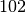
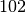
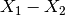

The purpose of this document is to explain how Mantid deals with error propagation and how it is used in its algorithms.
In order to deal with error propagation, Mantid treats errors as Gaussian
probabilities (also known as a bell curve or normal probabilities) and each
observation as independent. Meaning that if  then it is still
possible for a value of  to occur, but less likely than
then it is still
possible for a value of  to occur, but less likely than  or
or  , and a value of
, and a value of  is far less likely still than any of
these values.
is far less likely still than any of
these values.
The Plus v1 algorithm adds two datasets together, propagating the
uncertainties. Mantid calculates the result of  as
as

with uncertainty
 .
.
Consider the example where  and
and  .
Then for this algorithm:
.
Then for this algorithm:


Hence the result of Plus v1 can be summarised as  .
.
Mantid deals with the Minus v1 algorithm similarly: the result of  is

with error
.
The Multiply v1 and Divide v1 algorithms propagate the uncertainties according to (see also here):
 ,
,
where  is the result of the multiplication,
is the result of the multiplication,  , or the division,
, or the division,  .
.
Considering the example above where and
. Mantid would calculate the result of  as
as
 , with uncertainty
, with uncertainty
 .
.
For Multiply v1, the result of  is
is
 , with uncertainty
, with uncertainty
 .
.
Category: Concepts